Design Excellence
Creating timeless, expressive and human-centred lighting designs that inspire, endure and strengthen spatial identity.
Architectural Lighting Consultancy
RADA ROUGE is an architectural lighting consultancy dedicated to transforming architecture through the art and science of light. Every beam, shadow and subtle contrast is intentionally crafted to enhance form, reveal spatial depth and create meaningful experiences.
About RADA ROUGE
RADA ROUGE Lighting Design Consultancy works with architects, interior designers and developers to translate visionary concepts into practical, measurable lighting solutions across architectural exterior lighting, hotel environments, luxury residences and large-scale mixed-use developments.
Lighting design is far more than illumination. It shapes perception, evokes emotion and defines the identity of a space.
By integrating artistic sensibility with engineering excellence, every design is made visually compelling, technically refined and purpose-driven.
Mission & Philosophy
RADA ROUGE sees light as a language of architecture. The studio harnesses the power of light with precision and purpose, transforming creative visions into intelligent, meaningful lighting experiences.
Creating timeless, expressive and human-centred lighting designs that inspire, endure and strengthen spatial identity.
Integrating advanced lighting systems, smart controls and sustainable technologies to achieve optimal performance and efficiency.
Working closely with architects, designers and developers with unity and trust, refining ideas to achieve harmony and precision.
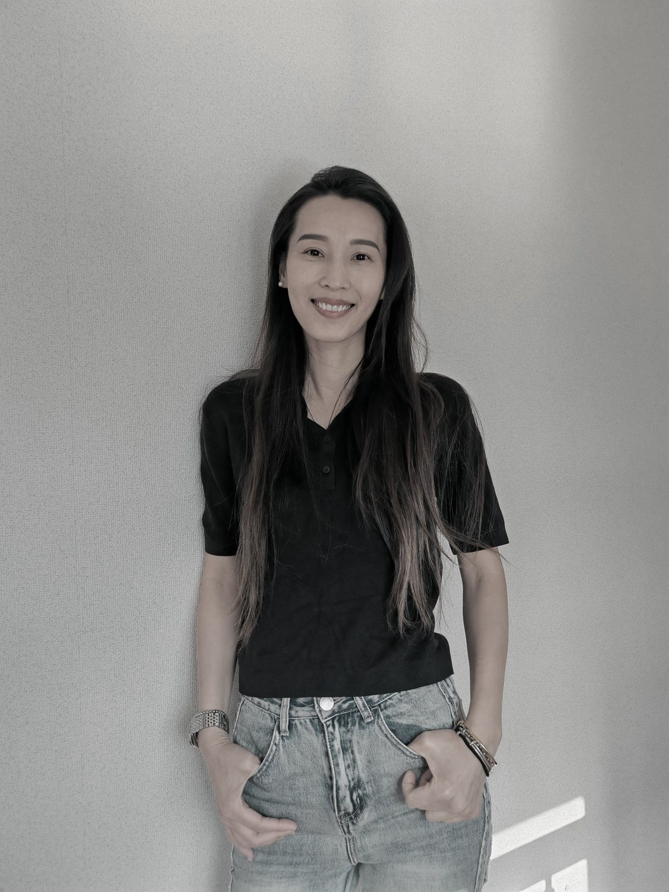
Founder & Design Director
Ada Wong is a distinguished architectural lighting designer with over eleven years of experience crafting refined lighting environments across luxury hospitality, high-end residential, commercial and mixed-use developments. As a professional member of the International Association of Lighting Designers (IALD), she is recognized for her ability to shape spaces through light with both artistic sensitivity and technical precision.
Guided by a design philosophy that harmonizes Asian sensibilities with global aesthetics, Ada approaches lighting as an essential layer of architecture, one that defines atmosphere, reveals materiality and creates emotional resonance. To her, light is more than illumination; it is a powerful design language that transforms space and elevates human experience.
Born in Hong Kong, Ada's academic journey reflects a multidisciplinary foundation in design and engineering. She studied Interior Design at the Hong Kong University School of Professional and Continuing Education, and later earned a degree in Architectural Engineering Management from Birmingham City University in the United Kingdom.
Her professional journey began at an interior and environmental design company, where she developed a deep understanding of spatial design and environmental design. She later joined the Japanese lighting consultancy Lightlinks & Isometrix, managing large-scale commercial and five-star hospitality developments across Hong Kong and Mainland China.
Ada subsequently joined the Hong Kong office of internationally acclaimed lighting master Tino Kwan as Senior Lighting Designer, contributing to a portfolio of prestigious projects across global markets. Her portfolio spans interior, landscape and facade lighting, encompassing iconic hotels, luxury residences, integrated developments and premium commercial spaces.
Throughout her career, she has collaborated with numerous renowned architecture and design firms, including Zaha Hadid Architects, LWK + Partners, LTW Designworks, Steven Leung Design.
Services
The services below follow the company profile, covering design concept, drawings, specifications, coordination and commissioning.
Lighting concept, mood board and facade strategy.
Lighting technical drawing and lighting detail drawing.
Lighting specifications and customised light fittings design and installation details.
Architectural lighting and decorative lights.
Lighting control specifications.
Project coordination and on-site coordination.
Workflow
The workflow follows the sequence in the company profile: understanding needs, developing concepts, producing technical documentation, coordinating site progress and finalising the lighting scenes.
Understanding customer needs through consultation.
Developing suitable design solutions based on project needs.
Determining the design and developing lighting technical drawings.
Preparing the lighting technical documents required for the project.
Coordinating on-site construction and installation progress.
Developing dimming scene tables and completing on-site testing, commissioning and final defect report.
Selected Projects
Each project below uses images and descriptions from the PPT profile. The homepage can later be split into a dedicated project archive when more material is ready.
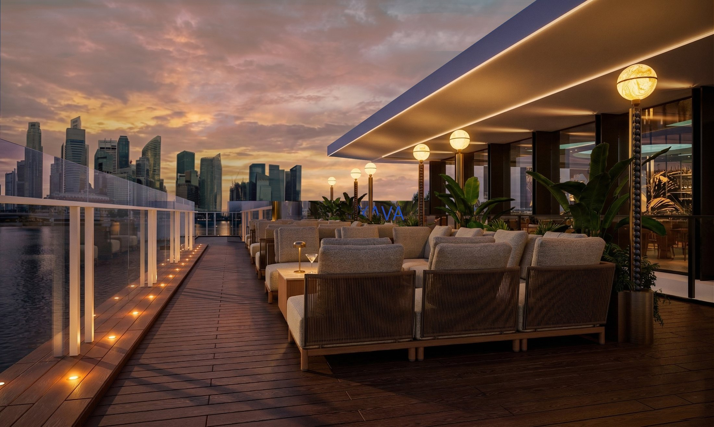
The lighting design dissolves the boundary between interior and exterior, using accent lighting, dynamic sky imagery, custom decorative luminaires, RGBW effects and intelligent dimming control.
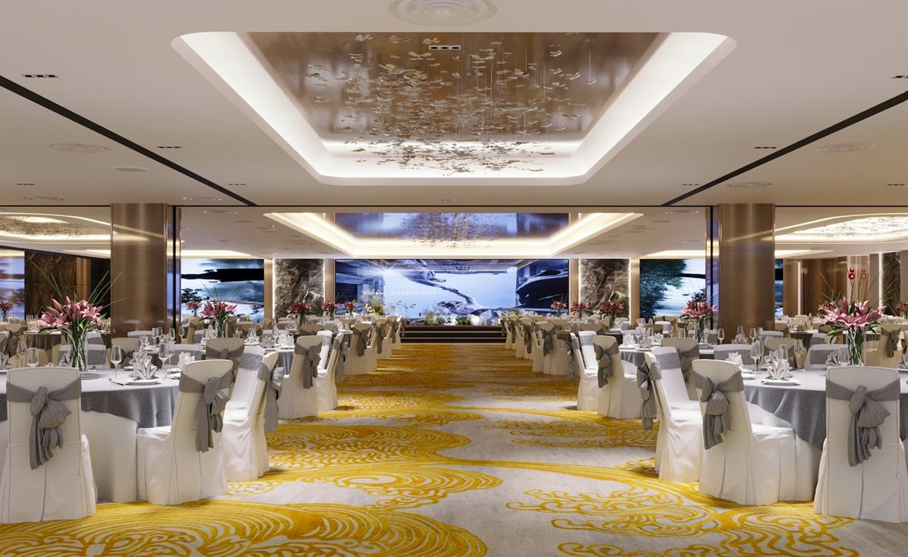
Ambient, accent and indirect lighting create a refined multifunctional venue, with cove lighting, adjustable track lighting and integrated dimming scenes for banquets and celebrations.
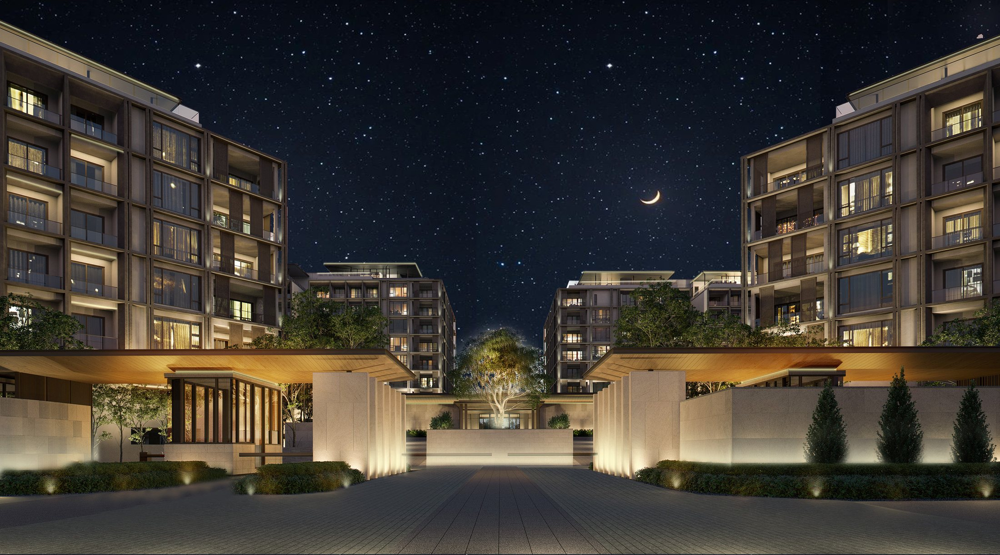
A warm and serene residential lighting concept using indirect light, integrated luminaires, landscape accents and decorative lanterns to balance architecture, nature and emotion.
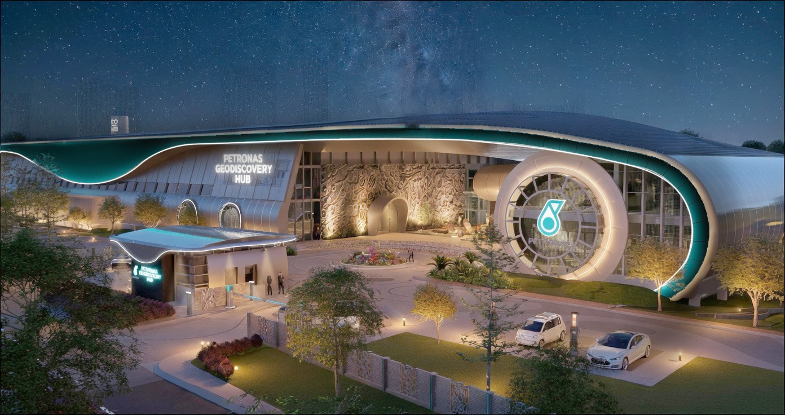
Integrated indirect linear lighting expresses the identity of a large-scale headquarters, revealing facade details while balancing site safety, guidance and environmental integration.
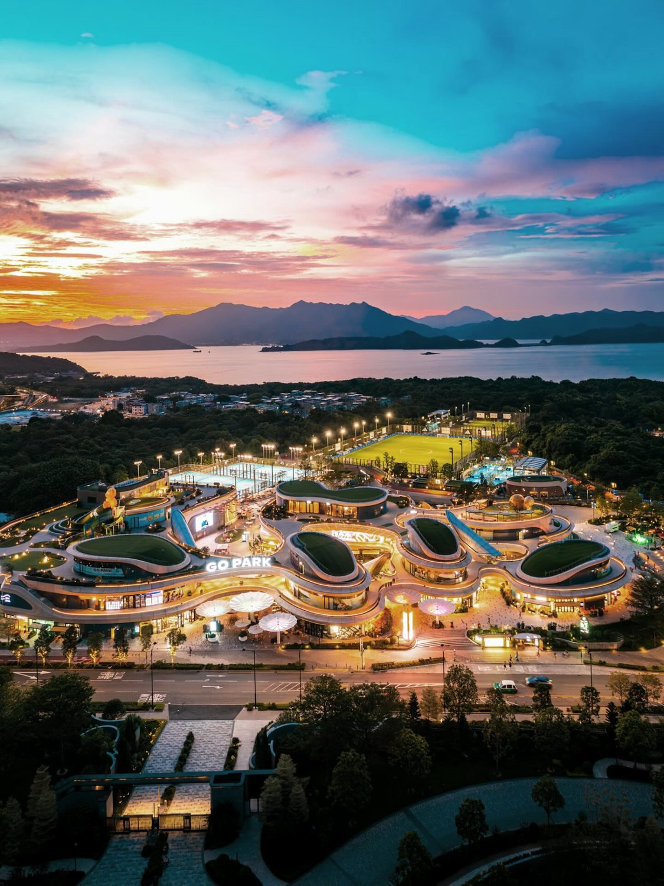
Functional and decorative lighting support commercial spaces, residential use, outdoor sports venues and driving roads, combining floodlights, light poles, linear strips and in-ground uplights.
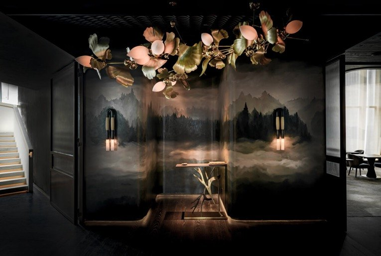
A relaxed mood and high-end lighting strategy using efficient ceiling lights, custom pendant lighting and a water ripple projector to create a wave-like dining atmosphere.
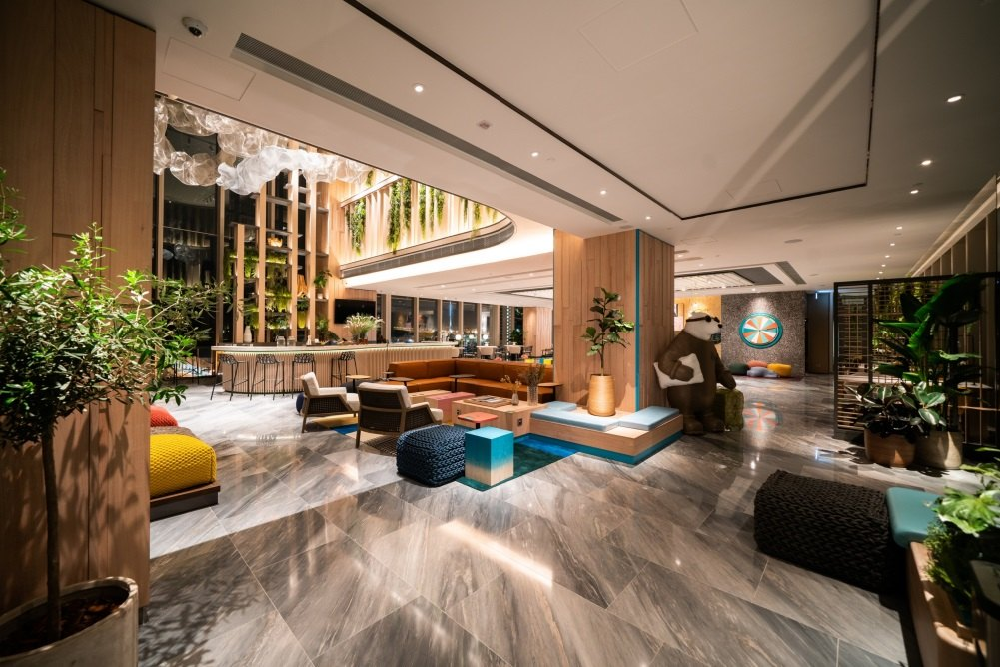
A continuation of the clubhouse lighting language, shaping intimate leisure, dining and social areas with warm layers, accent lighting and carefully integrated decorative moments.
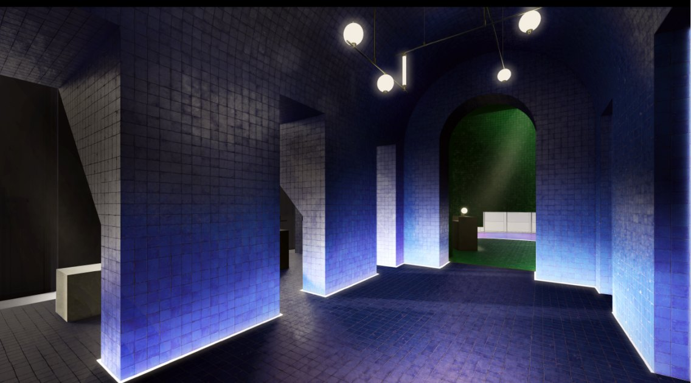
The lighting design creates a simple yet contemporary ambience, using soft spherical glow, corridor highlights and indirect cove lighting to enhance the architectural ceiling and guest experience.
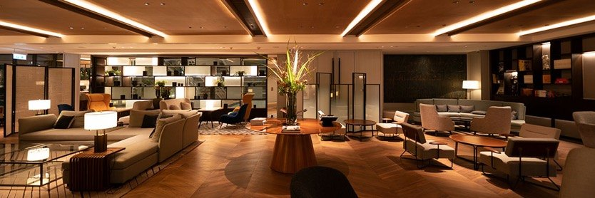
A warm and refined lighting approach blending classical and modern aesthetics, with soft ambient glow, corridor highlights and indirect cove lighting to enhance the architectural ceiling and guest experience.
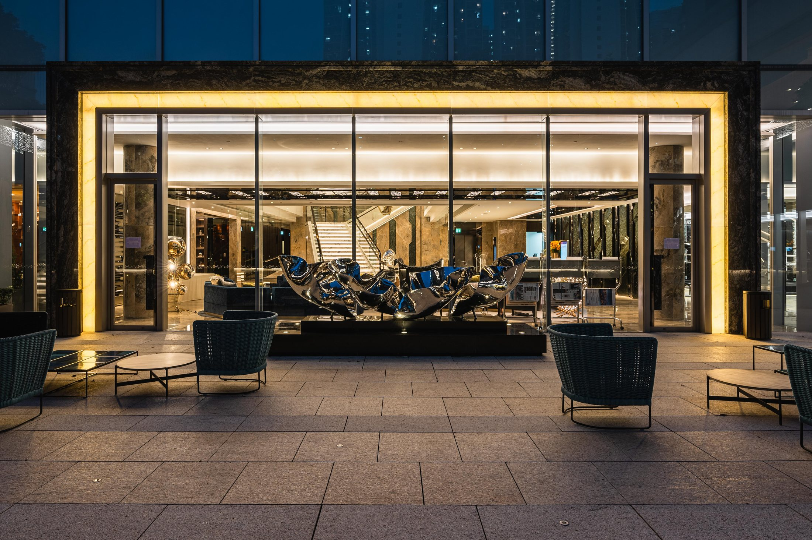
Warm lighting, dimmable high-power spotlights and intimate table lamp moments create a relaxed home-like atmosphere around the void, artwork and leisure areas.
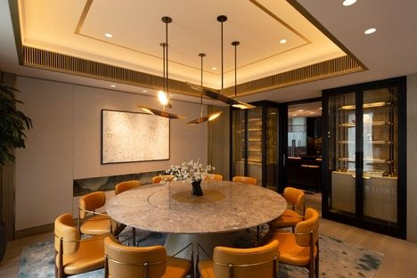
Linear light strips, recessed fixtures and square walkway lights form a concise and elegant strategy where light is visible without exposing the presence of fixtures.
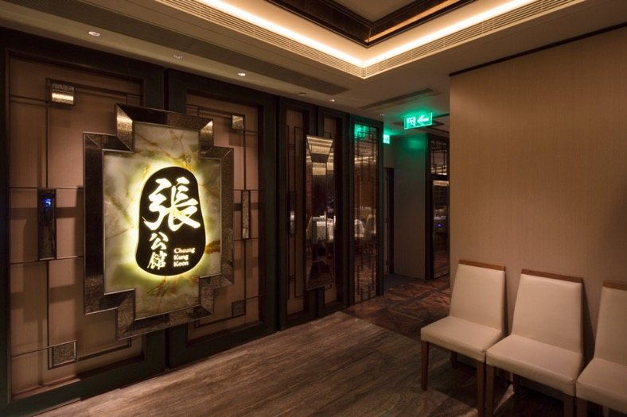
Light strips and recessed ceiling lights create a comfortable dining atmosphere, enhancing architectural details with concealed mirrored-finish light shields.
Get In Touch